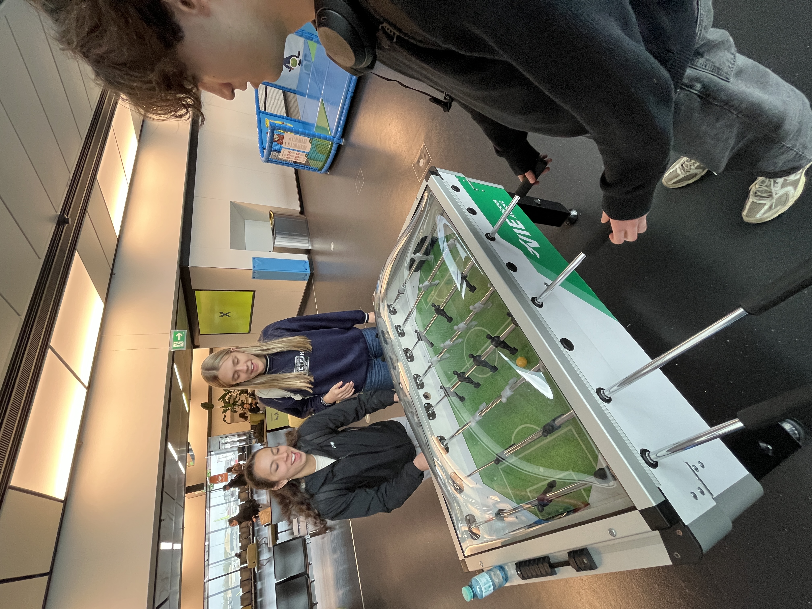
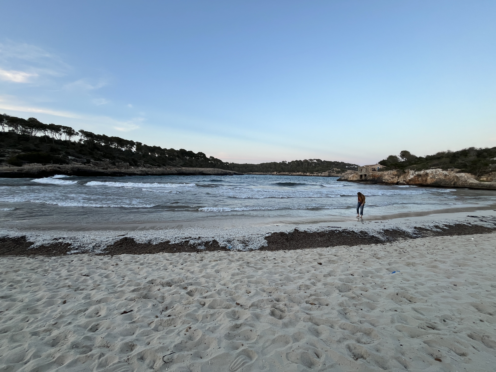
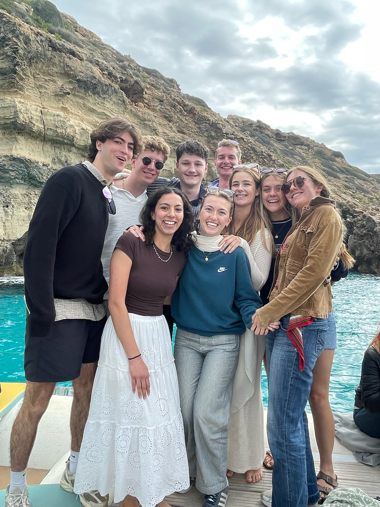

April 21, 2025
Thursday
Today was a long day of travel. Our plane left Prague at 11 a.m., and we got to the airport a bit early, so we had some fun playing FIFA on the free PS5s they have at the AC Sparta store. Unfortunately, we got stuck with a three-hour layover in Vienna because Austrian Airlines was the cheapest flight. Fortunately, the Vienna airport had free foosball and Nintendo to kill some time. Our flight to Mallorca arrived at around 6 pm, and Amelia’s friend Jade and her friend Raff picked us up from the airport. We had initially tried to find a way to make our Mallorca trip work without having to rent cars, but our Airbnb was far from Palma, and the public transport on the island isn’t very good. Having cars to visit more beaches and to be able to see more of the Island was totally worth it. Plus, the car rentals only turned out to be $45 per person for the four days we were there, which seemed like a great deal. We arrived at the Airbnb an hour later, and it was incredible! Beautiful little four-bedroom, eight-bed house in a small town, only a ten-minute walk from the ocean. The house had a pool, but it was never warm enough to swim comfortably. Shout out to Carmen for being a great Airbnb host and for being willing to take her chance on renting to us even though we were well under her age minimum of 30 (for the record, we were very good guests). For sunset, we walked down to the local beach, Cala S’Amarador. Unfortunately, it was cloudy and windy, but it still felt amazing to be on the ocean.


Friday
Big day of beach hopping!
Caló des Moro
Unfortunately, one of our rental cars got rear-ended on the way to the beach, but thankfully, we had paid for full insurance coverage, and only the license plate was damaged. Caló des Moro was gorgeous! The water was crystal clear, and cliffs jutted out into the ocean. Reminded me a bit of Pictured Rocks National Lakeshore in the Upper Peninsula. There were people cliff jumping on the other side of the beach, so naturally we had to join in. The cliff was only like ten feet above the water, but it was such a blast. We only went in twice, though, because it was cold and windy when we got out. Honestly, the water felt warmer than the air. We still ended up hanging out for a long while and even ate lunch there. After we walked around one of the cliffs to another beautiful beach. The whole area was managed by a local family, which I think is great.


El Caragol
This beach was a bit of a nightmare to get to. Google Maps had no idea that the route it wanted us to take involved private, gated-off roads. It took us a lot of tries to figure out where to go. At one point, we found ourselves on a narrow one-lane dirt road that abruptly dead-ended. We had to do a 25-point turn to get back on track. Half an hour later, we finally made it to the beach. It was a half-mile walk along the coast to the beach from the parking lot. Cabrera Island was visible in the distance the whole time. It would be interesting to visit at some point since I think it’s all a national park. We didn’t actually make it to the beach because we found a fun rock outcropping with some old stone structures to explore. And no one was in the mood to swim with the cool weather and wind.


Es Pontàs and Cala Santanyi
I loved the Es Pontàs arch! Such a cool natural formation, I was surprised it wasn’t more crowded at the lookout point. Cala Sanranyi was the most touristy of the beaches we visited today. There were a lot of hotels built right next to it. Luckily, it wasn’t crowded. We lay out on towels for an hour until it got too cold. The only person swimming was a small kid who was having fun trying to jump over the waves.


Cooking
Forgot how much I missed cooking in a proper kitchen! It even had a gas stove! We made tacos that turned out really well. Group dinner was a success!
Saturday
Boat cruise
Most of today was spent on a boat cruise through Magic Catamarans! It was fantastic to spend so much time on the water, but it was very cold. The weather was overcast most of the day, and there was a lot of wind on the boat. We hung out in mesh at the front of the boat the whole time. They offered snorkeling equipment, which we were stoked about before the cruise, but after getting whipped around by the cold wind, no one was excited about jumping in the water, and there wasn’t anything to see underwater either. We were served a decent lunch with a kebab, chicken breast, brat, and salad. They also gave out glasses of sangria, which helped take the chill off. Warmer weather and sun would have made it a better experience, but we still had a great time, hard to complain when you’re on the Mediterranean.

Palma
We finished the cruise at around 3 and headed into the Palma city center. We got our souvenir shopping out of the way and visited Palma Cathedral. We weren’t able to go inside, but the architecture was stunning! Love the gothic style. We walked around the area a bit more and randomly stumbled on a rock festival, which was entertaining. From our brief visit, I really liked Palma, especially all the narrow alleys lined with shops.


Sóller
After Palma, we drove for an hour to the small town of Sóller. The road there passed through the longest tunnel I’ve ever been in; it must have taken at least 5 minutes to go through. I attempted to hold my breath, but quickly realized it was futile. Sóller was a very pretty little town nestled in the mountains. We parked and walked to the main square, where there was a traditional dance happening. There were maybe 50 people of all ages dancing in unison. We watched for at least 15 minutes, it would have been fun to be able to learn how to do it; they were all very good. The town square was also home to the Parroquia de Sant Bartomeu de Sóller. The architectural style felt very similar to Palma Cathedral, very pretty! Unfortunately, the restaurant we wanted to go to for tapas was fully booked, so we ended up at a place a few minutes from the main square. I ordered the beef cheek tacos. They were good, but nothing amazing. I would have rather had our homemade tacos from last night again.